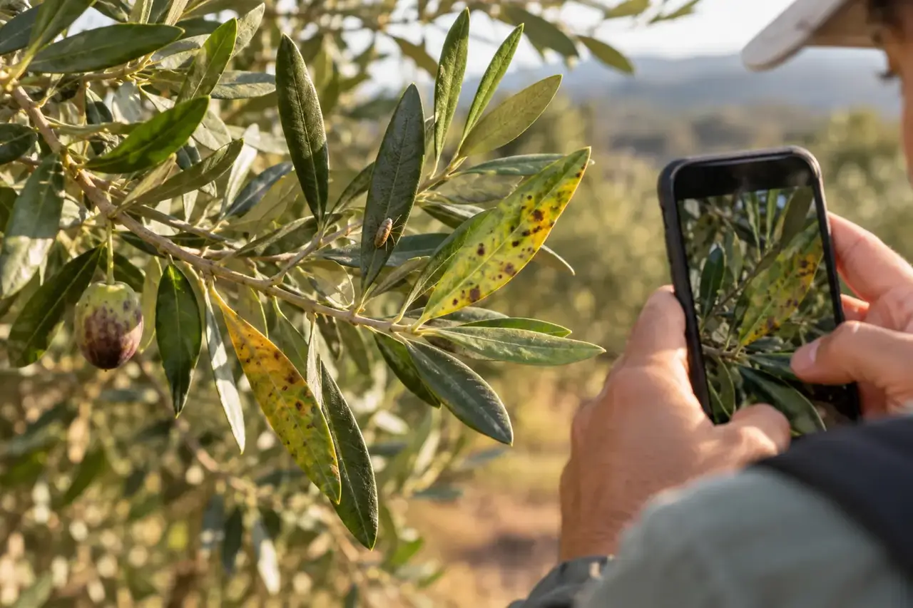

Inicio / Investigación / Identificación visual de insectos, patógenos y cambios de color
Línea 05 · TecRural I+D
Análisis de imágenes con IA: señales visibles en hojas, flores y frutos
Una fotografía bien tomada puede ayudar a localizar señales visibles y ordenar qué conviene revisar primero.
Desarrollo de modelos y recopilación de imágenes de campo
Así podría aplicarse en el campo

Escena ilustrativa: la imagen puede ayudar a localizar señales que después requieren revisión.
La necesidad
¿Qué problema puede ayudar a resolver?
Inspeccionar muchas plantas lleva tiempo y la apariencia cambia con la luz, el fondo, la variedad y la fase del cultivo.
Cómo funciona
Un sistema de visión artificial localiza patrones en imágenes y los compara con ejemplos etiquetados. Puede señalar formas compatibles con insectos o lesiones y medir cambios de color; una persona debe revisar el contexto y confirmar hallazgos.
Qué información se observa
Regiones de la imagen con manchas, mordeduras, insectos o deformaciones
Color relativo de hojas o frutos bajo condiciones de captura controladas
Especie o cultivo, órgano, ubicación aproximada y fecha
Confianza y calidad de la imagen, cuando el sistema lo permita
Valor para la explotación
Priorizar la inspección de plantas, documentar la evolución y facilitar una consulta técnica mejor informada. El análisis de color también podría apoyar el seguimiento de cambios visibles a lo largo de la campaña.
La validación depende de imágenes representativas del campo: un estudio de detección de enfermedades del tomate trabajó con imágenes de distintas condiciones ambientales y fondos complejos. Los resultados de una especie no se trasladan automáticamente a otra.
Oportunidad comercial
Un servicio que parte de una necesidad concreta
Posible herramienta para cooperativas y explotaciones con recorridos frecuentes: documentación visual, cribado inicial y derivación de casos que requieren revisión experta.
Qué hay que validar
Una imagen no siempre permite diferenciar causas parecidas ni descartar un problema que no aparece en la foto. Se necesita una colección representativa y revisada por especialistas; los resultados deben presentarse como señales probables, no como diagnóstico definitivo ni prescripción fitosanitaria.
La información de esta página describe una línea de investigación o desarrollo; no supone que exista un producto validado para todos los cultivos. Toda orientación técnica se contrasta con datos de campo y asesoramiento profesional cuando procede.